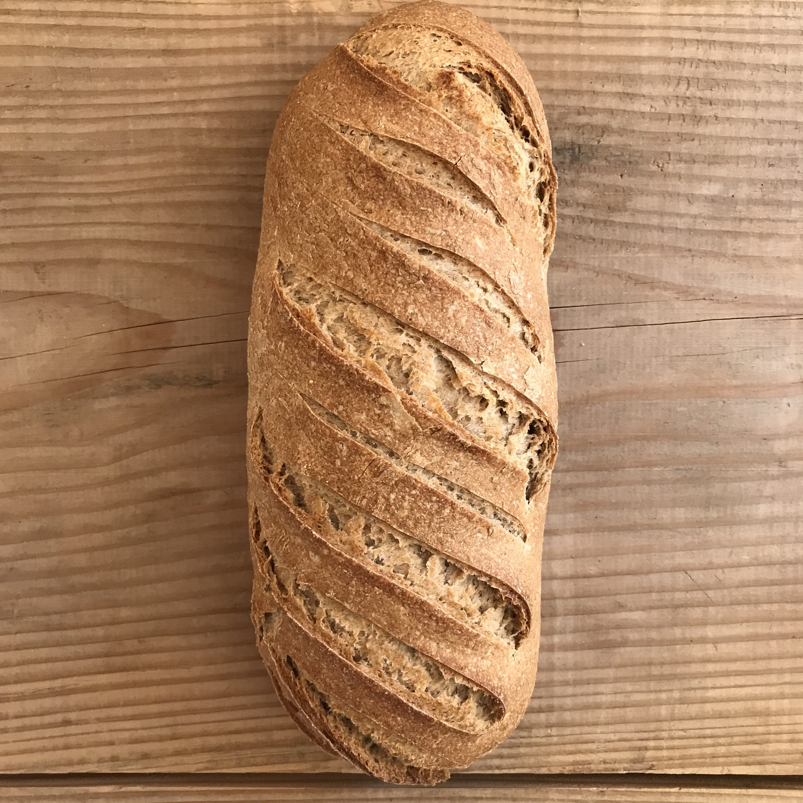

CURICULUM VITAE
COMPLET Lepain
Recherche de fromage
Fort de mon experience dans le monde de la confiture, j'ai découvert le monde du formage et shouaite m'y investir professionnellement
Experiences proffessionels:
-boulangerie de saint nazerre
-Doublure de fesses de Scarlett Johansson dans le film Lucy
-nourrissage de canards et poules
Savoir faire technique:
-Tendre et souple
-Contient raisins sec

Compétences:
-bon gout
-bon relationnel
-dévellopement c++
-mathématiques appliqués
-le tir de l'aigle
Hobbies:
roller, arts martiaux, saut en parachute, astraulogie